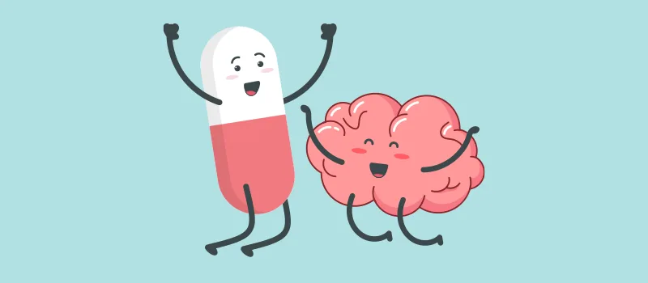

Expanded Nursing Uganda Explanation
Drugs Used in the Management of Central Nervous System Disorders should be reviewed through safe maternal and newborn assessment, early recognition of danger signs, respectful communication and timely referral. Connect the definition to vital signs, bleeding, fetal or newborn wellbeing, patient education and local protocol requirements.
01 Drugs Used in the Treatment of Depression
Depression is a mental state characterized by diverse psychological symptoms such as low mood, loss of interest and enjoyment of activities, and reduced energy. Depression is associated with physical symptoms such as:
- Fatigue
- Anxiety
- Sleep disturbance
- Reduction in libido
- Decreased productivity
- Changes in appetite or weight
- Loss of concentration
- Loss of interest (depressed mood)
- Thoughts of death and suicide
Drugs used in the treatment of depression include:
- Tricyclic antidepressants
- Selective Serotonin Reuptake Inhibitors (SSRIs)
- Monoamine Oxidase Inhibitors (MAOIs)
- Other antidepressant drugs (Atypical antidepressants)
02 Tricyclic Antidepressants
These drugs inhibit the reuptake of norepinephrine and serotonin at the presynaptic neuron, prolonging neuronal activity.
Examples :
- Amitriptyline
- Imipramine
- Clomipramine
Amitriptyline
Available Preparations:
- Tablets : 25 mg
Available Brands : Laroxyl®
Pharmacokinetics: Amitriptyline is absorbed rapidly from the GIT, distributed widely into the body, including the CNS and breast milk, metabolized in the liver to active metabolites, and excreted in urine.
Indications :
- Depression where sedation is required
- Nocturnal enuresis in children
- Peripheral neuropathy
- Post-herpetic neuralgia
- Migraine prophylaxis
- Tension headache
- Adjuvant in pain management
Contraindications :
- Known hypersensitivity to the drug
- Recent myocardial infarction
- Severe liver disease
- Manic phase
- Coma or severe respiratory depression
- Prostatic hypertrophy
- Glaucoma
Dosage :
Depression :
- Adult : Initially 75 mg daily in divided doses or as a single dose at bedtime. Increased gradually according to response to 150 mg.
Nocturnal Enuresis:
Children :
- 7-10 years: 10-20 mg at night
- 11-16 years: 25-50 mg at night. Maximum period of treatment is 3 months.
Peripheral Neuropathy : Initially 10-25 mg daily at night, increased if necessary to 75 mg daily.
Migraine Prophylaxis: Initially 10 mg at night, increased according to response to a maintenance dose of 50-75 mg at night.
Adjuvant Pain Management: 10-25 mg at night, up to a max of 150 mg.
Side Effects:
- Dry mouth
- Sedation
- Constipation
- Postural hypotension
- Difficulty with micturition
- Blurred vision
- Cardiac arrhythmias
- Unpleasant taste
- Somnolence
- Photosensitivity
- Interference with sexual function
- Nausea
- Tremors
- Sweating
- Skin rashes
- Headache
- Urticaria
- Hypomania
- Weight gain
- Increased appetite
Drug Interactions:
- Cimetidine, valproic acid may increase amitriptyline blood concentration and risk of toxicity
- Alcohol, anticonvulsants, phenothiazines, and sedative hypnotics may increase CNS depression caused by amitriptyline
- Carbamazepine reduces the serum concentration of amitriptyline
- Concurrent use of amitriptyline with phenylephrine, ephedrine may increase blood pressure
- Amitriptyline may decrease the hypotensive effect of methyldopa
Key Issues to Note:
- Inform the patient that full therapeutic effect may delay up to 4 weeks
- Avoid alcoholic beverages while taking this drug
- Warn the patient not to stop taking the drug suddenly
- The drug causes drowsiness and may impair activities that need mental alertness
03 Selective Serotonin Reuptake Inhibitors (SSRIs)
Their efficacy is similar to that of tricyclic antidepressants but with fewer side effects because of low affinity for muscarinic, histaminergic, and adrenergic receptors.
Examples :
- Fluoxetine
- Paroxetine
- Sertraline
- Citalopram
Mode of Action: The antidepressant action of SSRIs is by inhibiting the reuptake of the neurotransmitter serotonin.
Fluoxetine
Available Preparations:
- Capsules : 20 mg
Available Brands : Prozac®, Nuzac®, Trizac®, Fludac®, Flocept®
Pharmacokinetics : Fluoxetine is well absorbed after oral administration, metabolized in the liver to active metabolites, and excreted in urine.
Indications :
- Major depression
- Obsessive-compulsive disorder
- Bulimia nervosa
- Premenstrual dysphoric disorder
- Panic disorders
- Post-traumatic stress disorder
- Hot flushes
Contraindications :
- Hypersensitivity to fluoxetine
- Severe renal failure
- Unstable epilepsy
- Manic phase
Dosage :
- Depression : 20 mg once daily, increased after 3-4 weeks if necessary. Find at appropriate intervals thereafter, max 60 mg once daily.
- Elderly : 20-40 mg once daily, max 60 mg.
- Bulimia Nervosa : 60 mg once daily, max 80 mg once daily.
- Obsessive-Compulsive Disorder : Initially 20 mg once daily, increased after 2 weeks if necessary, max dose 60 mg.
- Elderly : 20-40 mg once daily, max 60 mg.
- Panic Disorders : 10 mg once daily, do not exceed 20 mg daily.
- Premenstrual Dysphoric Disorder : 20 mg once daily.
Side Effects:
- Headache
- Insomnia
- Somnolence
- Constipation
- Abdominal pain
- Dry mouth
- Dizziness
- Anxiety
- Tremor
- Sedation
- Fatigue
- Mania
- Sweating
- Pharyngitis
- Euphoria
- Dyspnea
- Nervousness
- Sleep disturbance
- Drowsiness
Drug Interactions:
- Alcohol and other CNS depressants may increase CNS depression
- Fluoxetine may increase phenytoin blood concentration and risk of toxicity
- Fluoxetine may increase the effect of warfarin; therefore, the dose may need adjustments
- Fluoxetine may increase the blood levels and toxicity of lithium
- Fluoxetine inhibits the metabolism of carbamazepine and haloperidol
Key Issues to Note:
- Full antidepressant effect may be delayed until 4 weeks of treatment
- Give a lower dose in patients with hepatic and renal impairment
- Avoid taking alcohol during drug therapy
04 Drugs Used in the Treatment of Manic Disorders
Mania is a state of mind characterized by excessive cheerfulness and increased activity.
Signs and Symptoms:
- Hyperactivity
- Excessive enthusiasm
- Decreased need for sleep
- Flight of ideas
- Inflated self-esteem
- Talkativeness
- Extreme self-confidence
- Delusions
Acute mania usually begins abruptly and symptoms increase over several days . Manic episodes may be precipitated by:
- Use of antidepressants
- Lack of enough sleep
- Stressors
- CNS stimulants
- Bright light
Bipolar disorder (manic depression) is a mixed affective disorder in which the patient experiences alternating episodes of hypomania or mania and depression .
Management of Manic Disorders:
- Mild Symptoms of Mania : Lithium alone or in combination with benzodiazepine
- Severe Symptoms of Mania: Lithium plus antipsychotic drugs
Note: In acute attack of mania, lithium carbonate may be given concurrently with antipsychotic in order to bring the symptoms under control. Lithium carbonate has a slow onset of action which takes up to 2 weeks before therapeutic benefit is fully achieved.
Drugs used in the treatment of mania include:
- Lithium carbonate
- Sodium valproate
- Carbamazepine
- Lamotrigine
Lithium Carbonate
Available Preparations:
- Tablets : 300 mg
Available Brands : Camcolit®
Pharmacokinetics : It is completely absorbed from the GIT after oral administration, distributed widely into the body including breast milk. It is not metabolized and is excreted unchanged in urine.
Indications :
- Prophylaxis of mania
- Treatment of acute mania
- Manic phase of bipolar disorder
- Recurrent depression
- Aggressive or self-mutilating behavior
Contraindications:
- Pregnancy
- Severe renal impairment
- Cardiac disease
- Lactation
- Untreated hypothyroidism
- Disturbance of electrolyte balance
- Hypersensitivity to the drug
Dosage :
Adult and Children over 12 years :
- Acute Mania : 300 mg 3-4 times, maintenance dose 2.4 g/day.
- Prophylaxis : Initially 300-400 mg daily.
Side Effects:
- Nausea
- Diarrhea
- Muscle weakness
- Polyuria
- Vertigo
- Tremors
- Loss of concentration
- Hypothyroidism
- Impaired renal function
- Hypermagnesemia
- Disturbances of thyroid function
- Exacerbation of psoriasis
- Weight gain
- Oedema
- Mild drowsiness
- Sexual dysfunction
Drug Interactions:
- Concurrent use of lithium with thiazide diuretics may decrease renal excretion and enhance lithium toxicity
- Lithium may interfere with pressor effects of sympathomimetic agents and may decrease the effects of chlorpromazine
- Tetracyclines, phenytoin, carbamazepine, and methyldopa may increase lithium toxicity
- Concomitant use with haloperidol or other antipsychotic agents may result in severe encephalopathy
- Use of lithium with SSRIs may increase GI and CNS adverse effects
- Indomethacin and other NSAIDs decrease renal excretion of lithium
Key Issues to Note:
- The drug may be taken with food or milk to reduce GI upset
- Lithium should be discontinued before electroconvulsive therapy
- Patient should maintain adequate water intake
- Avoid large amounts of caffeine, which will interfere with drug’s effectiveness
- The drug should not be stopped abruptly
05 Drugs Used in the Treatment of Epilepsy
Epilepsy is a disorder of brain function characterized by recurrent seizures that have a sudden onset . A patient should not be described as having epilepsy until a second non-febrile seizure occurs.
Seizure : A seizure is a paroxysmal discharge of cerebral neurons accompanied by a clinical phenomenon apparent to the patient or to an observer.
Classification of Epilepsy
Epileptic seizures (fits) present in several different forms depending on the site of the discharge and whether the discharge remains localized or spreads.
Partial Seizures: These are epileptic seizures in which the neuronal discharge remains localized in one area of the brain. They result in a disturbance of function such as abnormal sensation or movement of the limb without loss of consciousness. Partial seizures are subdivided as follows:
- Simple partial seizures (consciousness is not impaired)
- Complex partial seizures (consciousness is impaired)
Partial seizures may become secondarily generalized seizures if the neuronal discharge spreads to involve the entire brain.
Generalized Seizures : Generalized seizures are characterized by a neuronal discharge involving the whole brain with loss of consciousness. They are subdivided as follows:
- Tonic-clonic seizures (grand mal)
- Myoclonic seizures
- Atonic seizures
- Absence seizures (petit mal)
Absence Seizures (Petit Mal) : These are generalized seizures characterized by a sudden loss of consciousness lasting for a few seconds. It is usually accompanied by motor activity which may vary from eyelid blinking to more extensive tonic body movement. It is common in children and juveniles.
Myoclonic Seizures : These are characterized by brief jerks in the limbs which may be single or multiple. The duration of the seizure is a few seconds. It mainly occurs in children and juveniles.
Atonic Seizures : Atonic seizures are characterized by loss of postural tone; the head sags or the patient falls down.
Generalized Tonic-Clonic Seizures (Grand Mal Fits) : These are characterized by a sudden attack with loss of consciousness and violent body jerking lasting 3-5 minutes. The patient regains consciousness spontaneously; incontinence, tongue biting, or other injuries may occur during the episode. Grand mal fits may be due to:
- Family history of epilepsy
- Uncontrolled febrile convulsions in children
- Head injuries
- Infections (e.g., meningitis, HIV)
- Birth trauma to an infant
- Alcohol and drug abuse
Status Epilepticus: It is a seizure lasting for more than 30 minutes or several fits following one another without restoration of consciousness in between the fits. Status epilepticus is a common complication of grand mal epilepsy and it’s a medical emergency.
Management of Status Epilepticus:
- Position the patient to avoid injury
- Give oxygen to support respiration
- If hypoglycemia is suspected, give a bolus of 50 ml of 50% glucose IV
- Consider giving parenteral thiamine if alcohol abuse is suspected
- Give anticonvulsants such as diazepam IV, lorazepam IV, clonazepam, midazolam
- Slow intravenous injection of phenytoin may be given if seizures recur or fail to respond to diazepam 30 minutes after it began
- Phenytoin by intravenous infusion should be given at a dose of 15 mg/kg body weight at a rate not greater than 50 mg/minute.
- Monitoring of blood pressure and ECG is necessary and phenytoin should be diluted with sodium chloride (normal saline) at a ratio of 1 mg of phenytoin: 1 ml of normal saline
Table 1: Summary of Choices of Antiepileptic Drugs
- Seizure Type Treatment Options
- Partial Seizures Carbamazepine, sodium valproate, pregabalin, lamotrigine, gabapentin, phenytoin
- Generalized Tonic-Clonic Seizures (Grand Mal) Carbamazepine, lamotrigine, sodium valproate, phenytoin
- Absence Seizures (Petit Mal) Ethosuximide, sodium valproate
- Myoclonic Seizures Sodium valproate, clonazepam
- Status Epilepticus Diazepam, clonazepam, midazolam, and phenytoin
Note: Monotherapy is preferable to a multiple-drug regimen and treatment is therefore initiated with a single drug, increasing the dose gradually until seizures are brought under control or adverse effects become severe. If treatment with the first drug fails, it is preferable to try alternative single first-line antiepileptics before giving combinations of drugs. The change-over from one antiepileptic to another should be made cautiously, withdrawing the first drug only when the new regimen has been largely established. Drugs with different modes of action should be selected for combined therapy, to reduce the risk of additive adverse effects. Many antiepileptic drugs interact with each other; therefore, precautions must be taken during prescribing.
Carbamazepine
Available Preparations:
- Tablets : 100 mg, 200 mg
- Syrup : 20 mg/ml
Available Brands : Tegretol®, Storilat®, Carbatol®, Carbadac®, Carbazina®
Pharmacokinetics : It is absorbed slowly from the GIT, distributed widely throughout the body, crosses the placenta, and accumulates in fetal tissue. It is metabolized by the liver to an active metabolite and is excreted in urine and feces.
Indications :
- Partial and secondary generalized tonic-clonic seizures
- Mixed partial or generalized seizure disorder
- Trigeminal neuralgia
- Prophylaxis in bipolar disorder
- Neuropathic pain
- Alcohol withdrawal
Contraindications :
- Hypersensitivity to carbamazepine and TCAs
- History of bone marrow depression
- Porphyria
Dosage :
- Epilepsy : Initially 100-200 mg 1-2 times daily, increased gradually after 2 weeks to the usual dose 400-1200 mg daily in divided doses. In some cases up to 1.6-2 g daily may be needed.
- Elderly : Initially 50 mg twice daily then increase to 400-1200 mg daily.
- Children 1 month – 12 years: Initially 5 mg/kg at night or 2.5 mg/kg twice daily, increased as necessary by 2.5-5 mg/kg every 3-7 days. Maintenance dose 5 mg/kg 2-3 times daily. Doses up to 20 mg/kg daily may be used.
- Trigeminal Neuralgia : Initially 100 mg 1-2 times daily, increased gradually according to response to 200 mg 3-4 times daily. Up to 1 g daily may be required in some cases.
- Prophylaxis of Bipolar Disorder Unresponsive to Lithium : Initially 400 mg daily in divided doses, increased until symptoms are controlled. Usual range 400-600 mg daily, max 1.6 g daily.
- Neuropathic Pain : Initially 100 mg twice daily, increased gradually until pain is relieved. Maintenance dose 200-600 mg daily. Do not exceed 1.2 g daily.
Side Effects:
- Nausea
- Ataxia
- Vomiting
- Dizziness
- Drowsiness
- Dry mouth
- Blurred vision
- Headache
- Anorexia
- Agitation
- Diarrhea
- Confusion
- Constipation
- Impotence
- Thrombocytopenia
- Arthralgia
- Stevens-Johnson syndrome
- Gynaecomastia
Drug Interactions:
- Clarithromycin, erythromycin, cimetidine, isoniazid may inhibit hepatic metabolism of carbamazepine with resultant increase of its serum concentration and toxicity
- Rifampicin, phenytoin, and phenobarbital may decrease serum concentrations of carbamazepine
- Antimalarial drugs may antagonize the activity of carbamazepine
- Use with alcohol and other CNS drugs may potentiate adverse effects of carbamazepine
- Use with verapamil may significantly increase the serum levels of carbamazepine
- Carbamazepine may decrease the effectiveness of theophylline and oral contraceptives
- Carbamazepine may increase the metabolism of warfarin, valproic acid, haloperidol, and phenytoin
Key Issues to Note:
- Take carbamazepine with food to prevent stomach upset
- Swallow controlled-release tablets whole, do not chew or crush them
- Grapefruit juice may increase the absorption and blood concentration of carbamazepine
- The drug is structurally similar to TCAs; some risk of activating latent psychosis or agitation in elderly patients exists
- Avoid alcohol during therapy
- The drug may cause drowsiness and impair ability to perform activities requiring mental alertness or physical coordination
- The drug may cause dry mouth and photosensitivity reactions
Phenytoin
Available Preparations:
- Tablets : 100 mg
- Injection : 50 mg/ml
Available Brands : Phenyto-S®, Epanutin®
Pharmacokinetics : It is absorbed slowly from the small intestine, distributed widely throughout the body, metabolized by the liver to inactive metabolites, and excreted in urine.
Indications :
- Generalized tonic-clonic seizures
- Partial seizures
- Status epilepticus
- Cardiac arrhythmias
- Trigeminal neuralgia or severe pain
- Control of seizures associated with neurosurgery or traumatic injury to the head
Contraindications:
- Hypersensitivity to phenytoin or other hydantoins
- Sinus bradycardia
- Avoid parenteral use in sinus bradycardia
- Sino-atrial block
- 2nd and 3rd degree heart block
- Stokes-Adams syndrome (IV)
- Hepatitis
Dosage :
Oral :
- Adult : Initially 150-300 mg daily as a single dose or in 2 divided doses, increased gradually according to response to the usual dose 200-500 mg daily.
- Children : Initially 5 mg/kg daily in 2 divided doses, usual dose range 4-8 mg/kg daily, max 300 mg daily.
Arrhythmias :
- Adults : Loading dose 250 mg 4 times a day for 1 day, then 250 mg/day for 2 days, maintenance dose 300-400 mg/day 1-4 times a day.
Side Effects:
- Gastric intolerance
- Drowsiness
- Confusion
- Slurred speech
- Gum hyperplasia
- Headache
- Sedation
- Insomnia
- Blurred vision
- Skin rashes
- Acne
- Hirsutism
- Nausea
- Nystagmus
- Vomiting
- Diplopia
- Behavioral disturbance
- Tremors
- Anorexia
- Constipation
- Blood disorders
- Coarse facies
- Fever
Drug Interactions:
- Alcohol and other CNS depressants may increase CNS depression
- Anticoagulants, cimetidine, fluoxetine, fluconazole, ketoconazole, isoniazid, and sulphonamides may increase phenytoin blood concentration and risk of toxicity
- Lidocaine, propranolol may increase cardiac depressant effects caused by phenytoin
- Phenytoin may decrease the effects of oral contraceptives, corticosteroids, haloperidol, furosemide, doxycycline, etc.
- Therapeutic effects of phenytoin may be decreased by barbiturates, carbamazepine, ethanol, folic acid, antacids, charcoal, and pyridoxine among others
Key Issues to Note:
- To ensure consistent absorption, phenytoin should be administered at the same time with regards to meals
- Phenytoin may be taken with food or milk to decrease GI upset
- Avoid alcohol during therapy
- Abrupt withdrawal may precipitate status epilepticus
- Advise the patient to maintain good oral hygiene
Sodium Valproate
Available Preparations:
- Tablets : 200 mg, 300 mg
- Syrup : 200 mg/5 ml
Available Brands : Epilim®, Petilin®, Valparin Chrono®
Indications :
- Generalized tonic-clonic seizures
- Partial seizures
- Atonic seizures
- Absence seizures
- Myoclonic seizures
- Acute manic phase of bipolar disorder
- Prophylaxis of migraine
Contraindications:
- Hypersensitivity to sodium valproate
- Family history of severe hepatic dysfunction
- Pregnancy
- Active liver disease
- Porphyria
- Pancreatitis
Dosage :
- Adult : Initially 600 mg daily in 2 divided doses, preferably after food, increased by 200 mg daily every 3 days to a max of 2.5 g daily, usual maintenance dose 1-2 g daily.
- Children under 12 years with body weight over 20 kg: Initially 400 mg daily in divided doses, increased according to response, usual range 20-30 mg/kg daily, max 35 mg/kg daily.
- Children < 20 kg : Initially 20 mg/kg daily in divided doses.
Side Effects:
- Nausea
- Vomiting
- Increased appetite
- Abdominal cramps
- Sedation
- Thrombocytopenia
- Behavioral disturbance
- Hyperammonemia
- Menstrual disturbances
- Tremor
- Ataxia
- Oedema
- Diarrhea
- Weight gain
- Gastric irritation
- Transient hair loss
- Drowsiness
Drug Interactions :
- Sodium valproate increases plasma concentrations of phenobarbital, primidone, phenytoin, zidovudine
- Aspirin may increase the effect of sodium valproate
- Sodium valproate absorption may be reduced by colestyramine
- Cimetidine and erythromycin may increase the effect of sodium valproate
- Concomitant use with clonazepam may cause absence seizures
- Antacids may increase the oral absorption of sodium valproate
Key Issues to Note:
- Avoid alcohol during therapy
- The drug may cause drowsiness and impair ability to perform activities requiring mental alertness or physical coordination
- The drug should not be withdrawn abruptly
Phenobarbitone
Available Preparations:
- Tablets : 30 mg
Available Brands: B-tone®
06 Nursing Uganda Clinical Lens
Use Drugs Used in the Management of Central Nervous System Disorders as a practical nursing topic, not only a memorized definition. Read the topic through the safety of two patients: the mother and the fetus or newborn.
- What to understand first: define drugs used in the management of central nervous system disorders, identify the normal or expected pattern, then explain what changes when the patient is unwell.
- Why it matters in care: the nurse must recognize risk early, explain findings clearly, document accurately and know when to escalate.
- How to revise it: connect each point to assessment, nursing diagnosis or care problem, intervention, rationale and evaluation.
07 Assessment Guide
- Maternal vital signs, bleeding, pain, contractions, uterine tone and danger signs.
- Fetal or newborn wellbeing, feeding, temperature, breathing and activity.
- History of pregnancy, parity, medications, allergies, investigations and referral risks.
08 Nursing Priorities, Rationales and Outcomes
- Recognize danger signs early and escalate without delay.
- Provide respectful communication, privacy, infection prevention and clear documentation.
- Teach the mother what to monitor at home and when to return urgently.
The rationale for these priorities is patient safety: nursing actions should prevent deterioration, reduce discomfort, support recovery and create clear evidence for the next caregiver.
- Expected outcome: Mother and baby remain stable, danger signs are acted on early, and the family understands follow-up instructions.
09 Patient Teaching and Revision Check
- Explain drugs used in the management of central nervous system disorders in simple language the patient or caregiver can repeat back.
- Teach warning signs, medicine or follow-up instructions, hygiene or lifestyle points where relevant.
- For exams, prepare a short answer using: definition, causes or risk factors, signs, assessment, management, complications and prevention.
- For ward practice, document baseline findings, actions taken, patient response and the plan for review.
Illustrations and Diagrams (1)

Related Video Lectures
Watch nursing lecture videos on YouTube for this topic. Opens in a new tab.
Watch on YouTubeExternal link: YouTube may use its own cookies and terms. Nursing Uganda is not affiliated with YouTube.